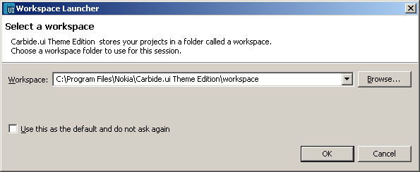

Starting Carbide.ui
Microsoft Windows XP
- Once the download is completed, extract the Zip file to a location
of your choice and run the batch file "CarbideUI.bat" to launch the tool.
Microsoft Windows Vista / Microsoft Windows 7 users
- Locate the master folder in which Carbide.ui is extracted.
- In Explorer, right-click the CarbideUI.bat file from the master folder
and then click "Create Shortcut".
- Rename the new shortcut to something useful, such as
“CarbideUI-admin rights.bat”. (Optional)
- Right-click the new shortcut, and then click "Properties".
- On the Shortcut tab, click the "Advanced" button.
- Select the "Run as administrator" checkbox.
- Click "OK" twice to complete.
Now, when you double-click the "CarbideUI-admin rights.bat" shortcut,
User Account Control (UAC) window will prompt you for administrative
privileges. You can use a similar technique to always run the command
prompt as administrator, or to always run an application as administrator.
Selecting a workspace
When you first run Carbide.ui, it will ask you to select a workspace. A
workspace is a folder on you PC in which all the themes you create will
be stored. For more information see Choosing / switching a workspace.

Figure: Selecting a workspace
Selecting the browse button allows you to choose or create workspace
folder. You can also select the checkbox to turn this option off so
that Carbide.ui always starts using your chosen work space.
Welcome screen
Carbide.ui opens with a welcome screen, in the welcome screen you have
the following options
- Create a new theme: You
to create a new theme by selecting this option
- Open a current theme: This
option will allow you to open a current theme
- Users Guide: Users guide
for Carbide.ui theme edition will be available by selecting this option
- Tutorials: This
option will guide you to end-to end tutorials for Carbide.ui
Figure: Welcome Screen